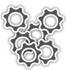

<html>
<head>
<script type="text/javascript" src="jquery.js"></script>
<script type="text/javascript">
enable_opacity = 1
opacmin = 0.3
thresh = 100
minsz = 75
minimsz = 25
maxsz = 300
maximsz = 280
x = 100
y = 100
pad = 100
xn = 5
yn = 8
arr = new Array(xn)

jQuery(document).ready(function(){

for (row = 0; row < xn; ++row)
{
	arr[row] = new Array(yn)
	for (col = 0; col < yn; ++col)
    {
		arr[row][col] = new Array(2)
		arr[row][col][0] = x + row * pad
		arr[row][col][1] = y + col * pad
        img = ''
		$("body").append('<div id="divver'+row+col+'" style="top:'+(arr[row][col][0] - minsz/2)+'px;left:'+(arr[row][col][1]-minsz/2) +'px;width:'+minsz+'px;height:'+minsz+'px;z-index:0;background-color:rgb('+Math.round(row/xn*255)+','+Math.round(col/yn*255)+',0);position:absolute;">'+img+'</div>')
        if (enable_opacity) {$('#divver'+row+col).css('opacity', opacmin)}
	}
}

$(document).mousemove(function(e)
{
	for (row = 0; row < xn; ++row)
    {
		for (col = 0; col < yn; ++col)
        {
            a = Math.sqrt( Math.pow(Math.abs(arr[row][col][0] - e.pageY), 2) + Math.pow(Math.abs(arr[row][col][1] - e.pageX), 2) )
            //$('#status').html(e.pageX +', '+ e.pageY+ ',' + a);
                if (a < thresh) 
            {
                //a = (Math.abs(y - e.pageY) + Math.abs(x - e.pageX)) / 2
                    szer = minsz + ((maxsz - minsz) * (1-(a / thresh)))
                    szimer = minimsz + ((maximsz - minimsz) * (1-(a / thresh)))
                    $('#divver'+row+col).css('width', szer + "px")
                    $('#divver'+row+col).css('height', szer + "px")
                    
                    $('#divver'+row+col).css('top', arr[row][col][0] - szer / 2 + "px")
                    $('#divver'+row+col).css('left', arr[row][col][1] - szer / 2 + "px")
                    $('#divver'+row+col).css('z-index', thresh - Math.round(a))

                    if (enable_opacity) {
                        $('#divver'+row+col).css('opacity', 1 - a/thresh + opacmin)
                    }

                    $('#imgger'+row+col).css('width', szimer + "px")
                    $('#imgger'+row+col).css('height', szimer + "px")
                    
                    $('#imgger'+row+col).css('margin', Math.round((szer - szimer) / 2) +"px")
                    
            }
                if (a > thresh) 
            {
                //a = (Math.abs(y - e.pageY) + Math.abs(x - e.pageX)) / 2
                    $('#divver'+row+col).css('width', minsz + "px")
                    $('#divver'+row+col).css('height', minsz + "px")
                    $('#divver'+row+col).css('top', arr[row][col][0] - (minsz) / 2 + "px")
                    $('#divver'+row+col).css('left', arr[row][col][1] - (minsz) / 2 + "px")
                    
                    if (enable_opacity) {
                        $('#divver'+row+col).css('opacity', opacmin)
                    }
                    
                    $('#imgger'+row+col).css('width', minimsz + "px")
                    $('#imgger'+row+col).css('height', minimsz + "px")       
                    
                    $('#imgger'+row+col).css('margin', ((minsz - minimsz) / 2) +"px")   
            }
        }
    }

}); 
})
</script>
<body>

</body>
</html>
